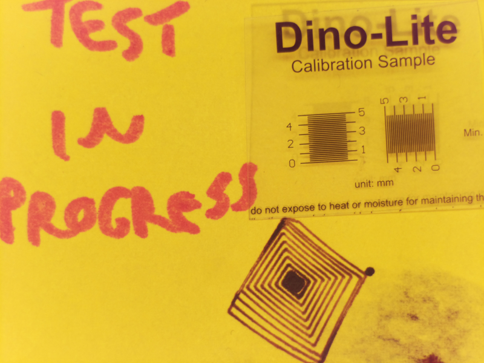
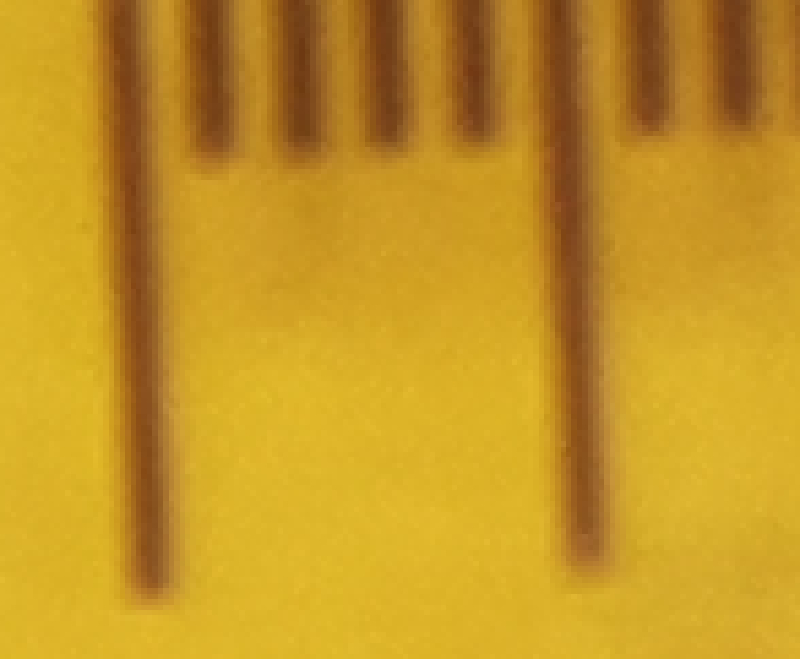

Fatigue Datum
A flexure pessimist might call this update "Fatigue Failure":
But I remain flexure-positive. While I waited for various computer vision bits to arrive (more on that shortly), I decided to run an extended endurance test on the manipulator. I generated twenty random Cartesian points and used the inverse kinematics algorithm to produce motor rotation commands, then copied the code 10,000 times and produced an enormous 200k-line Gcode file. As suggested by Jake in his documentation, the Clank UI stuttered a bit with the huge file but it ran well enough for my purposes. I started the program Sunday afternoon and checked in periodicially, so I know the fracture event happened between Monday night and Tuesday morning. When I noticed the failure, I stopped the file at ~108k lines, so it's safe to assume the fracture occured after ~70k moves.
A reasonable exercise would be to use forward kinematics to calculate the angular change each command imparted on the fractured joint (which was the flexure between Umbrella Link C and the long connecting link) and examine the range of angles it experienced. One can estimate that the joint flexed to +/- 15 degrees at most (due to physical limits and the initial file parameters), and likely moved closer to +/- 10 degrees through most of the random motion. That means the joint experienced around 35k back-and-forth cycles, which is a bit more than an order of magnitude improvement as compared to the higher angle fatigue tests conducted earlier. Clearly, this test could have been much more quantitative; I could have calculated motor moves that result in consistent joint motion, and could have rigged up some mechanism to flag the exact point where failure occured. I thought about doing this, perhaps by measuring resistance across the flexure (which should spike to ~infinity after fracture), but did not.
Despite the lack of improvement in fatigue life after polishing flexures, I still suspect surface roughness as the major factor in crack nucleation and eventual failure. Clearly, better fatigue tests are overdue; I need to rigorously control test angle and gather more than a handful of data points. Fortunately, the wire-EDM provides a convenient path for improving surface finish; I can simply program the machine to run multiple finishing passes after the initial cut. I preserved the fractured flexure, so I'll take a close look at the fracture surface and see if I can identify the crack initiation point.
Imaging
I started pulling together the plumbing for computer vision, as discussed previously. Following Alfonso and Dave's lead on another project, I built a rigid stand for a Raspberry Pi "High Quality Camera" and paired it with a cheap 50 mm telephoto lens. We have a pile of 8020 sitting around, so I went a bit overboard with the support frame in the interest of maximum stiffness; I promise the diagonal cross-brace improves image stability:
The raw image from the camera is quite good, with a resolution of ~80 px/mm and a total view of ~50 x 35 mm:

Note the ghosting on the calibration sample are due to sticky-note curl; the target is printed on clear plastic and doesn't quite sit flat, so it casts a slight shadow. Zooming in on the 12 megapixel image easily resolves the 200 um tick marks on the target:

Up next: OpenCV camera calibration, target tracking, fresh flexures, fatigue analysis, etc. Also, before running the fatigue test I bumped the acceleration up by a factor of 20, so the machine is a good bit more peppy. No video yet, unfortunately...